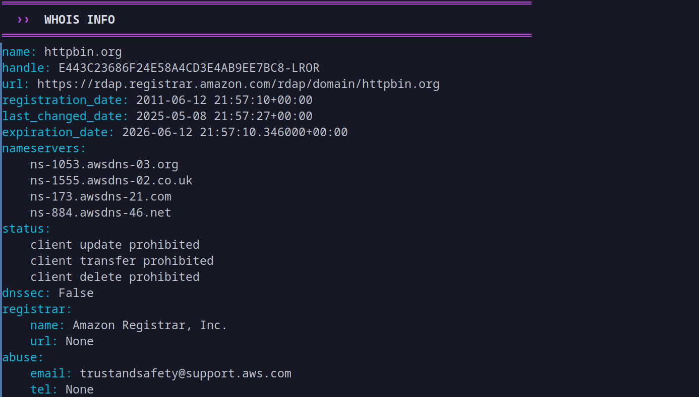
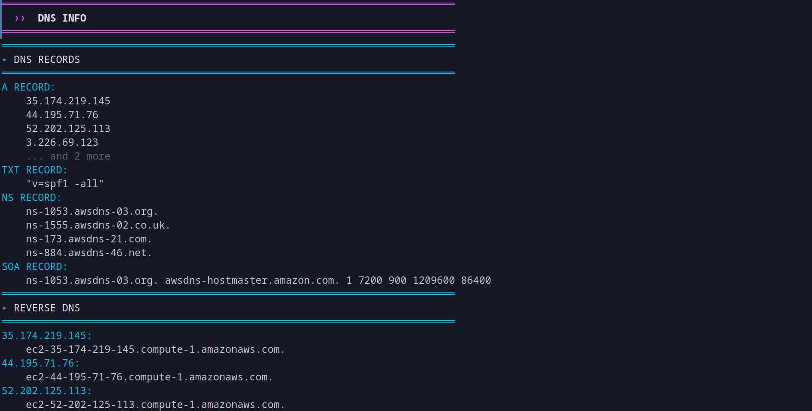
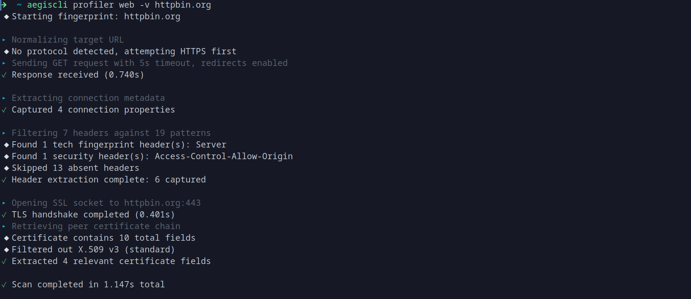

Usage Examples
// Interactive Demo
$
aegiscli profiler whois -v example.com
Querying WHOIS for example.com...
Domain: example.com
Registrar: IANA
Status: clientTransferProhibited
$
aegiscli profiler dns --log example.com
Resolving DNS records...
A: 93.184.216.34
AAAA: 2606:2800:220:1:248:1893:25c8:1946
Logged to ~/.aegiscli/logs/dns_20250217.log
$
aegiscli profiler web httpbin.org
Fingerprinting httpbin.org...
Status: 200 OK
Server: gunicorn/19.9.0
Warning: HSTS header missing
// Output Examples

WHOIS Output

DNS Resolution
 Web Fingerprint
Web Fingerprint

Verbose Mode